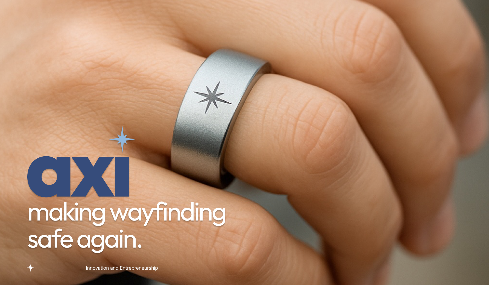
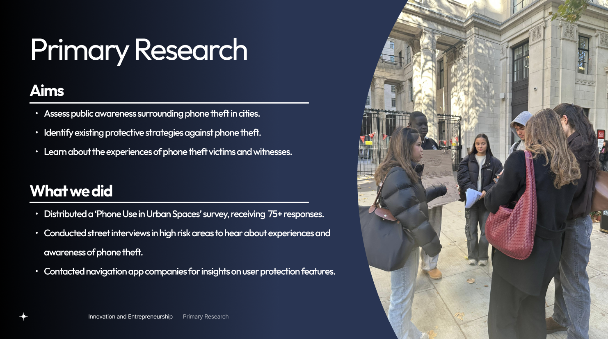
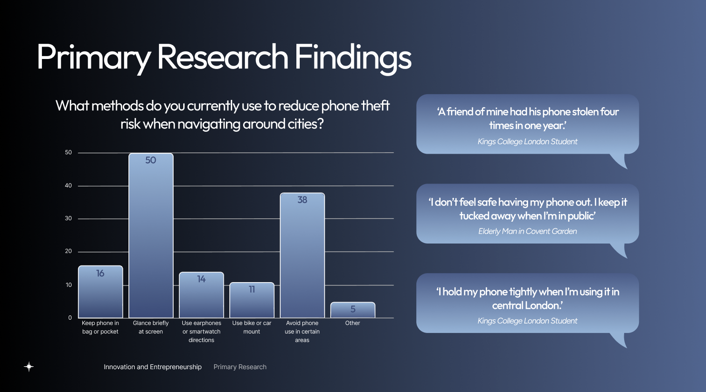
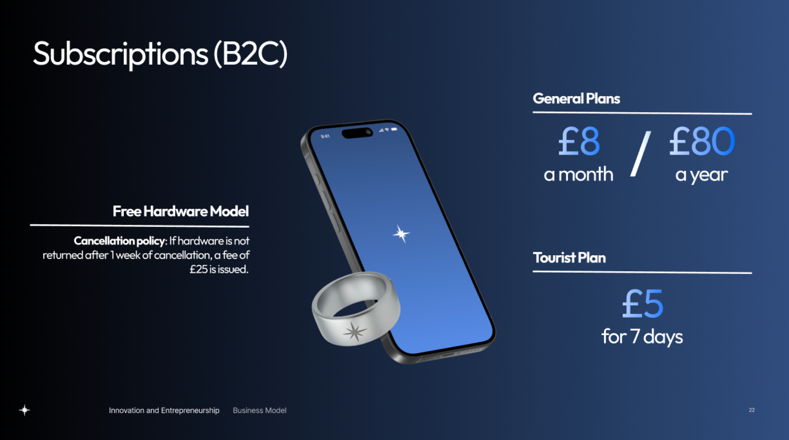
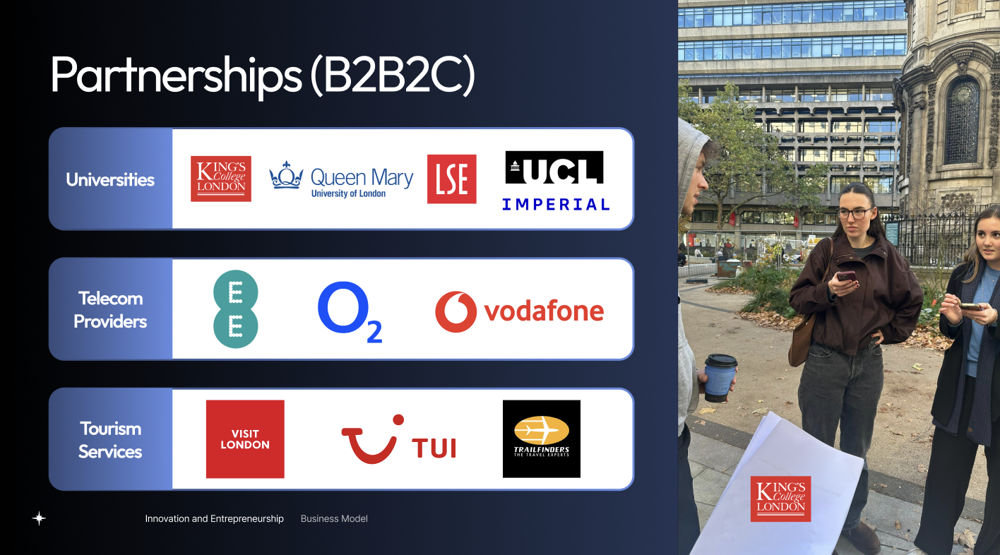
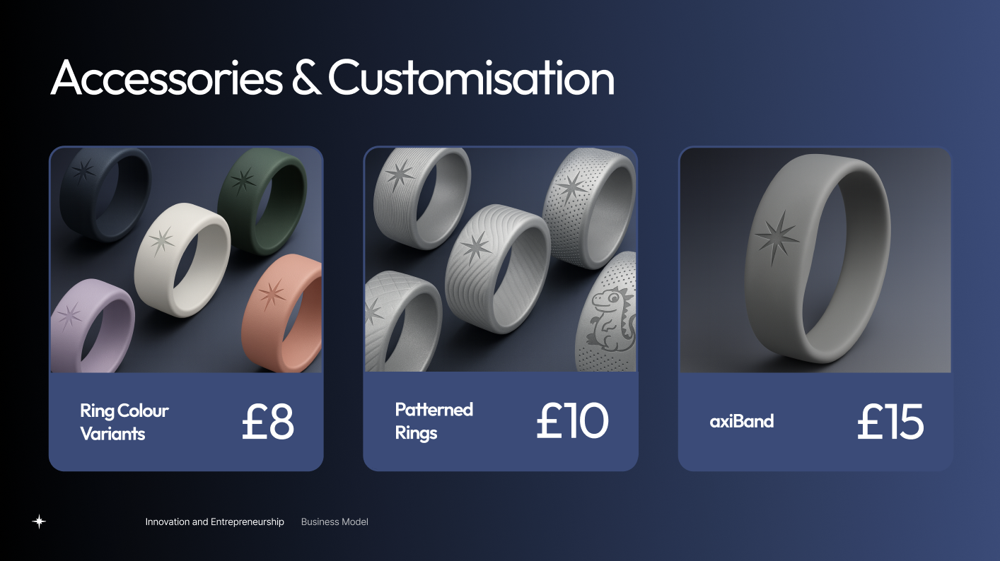
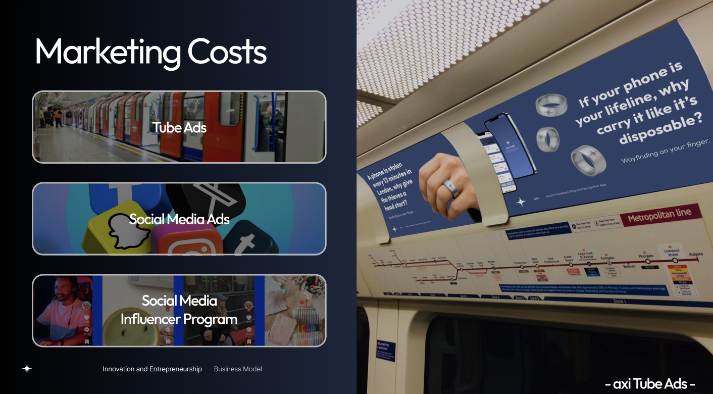
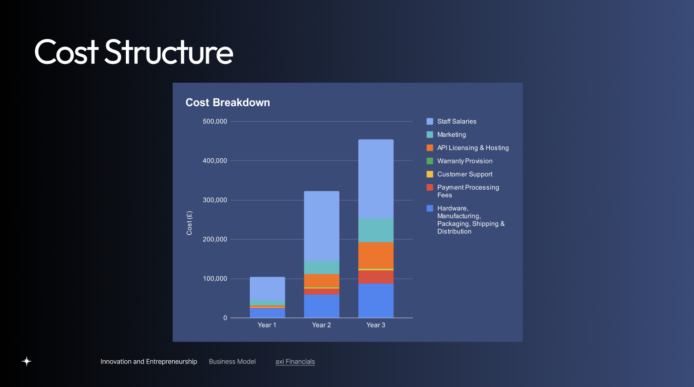

Overview
Axi was developed for the Innovation & Entrepreneurship module of the MEng Design Engineering course at Imperial College London. The module combines design thinking, business strategy and product commercialisation, and challenged us to take an idea from a real problem through to a viable venture.
Axi is a discreet haptic navigation ring that lets users keep their phone safely stored away while still receiving clear directions. Distinct vibration patterns signal left turns, right turns, off-route alerts and arrival. Users set their route in the companion app beforehand, and navigation then runs in the background using the Mapbox API.

Problem
Phone theft in London is rising sharply: 62% of Londoners feel more cautious using their phones outdoors, and 70% of thefts are rapid snatches targeting distracted people. Phones are often hidden or tightly held in public.
Navigation apps make this worse. Users must keep checking their screens, which distracts them and exposes their phones in high-theft areas. Existing hands-free options are expensive and obtrusive, and not designed for young urban travellers. The core problem is the lack of a simple, hands-free way to navigate cities without risking your phone or your spatial awareness.

Primary Research
We conducted interviews and surveys to understand user needs and pain points. This research informed our design decisions and helped us create a solution that truly addresses the problem of phone theft and distracted navigation.


Design Process

Our Business
Axi operates a subscription-led model. The wearable is provided at no upfront cost, but the hardware must be returned when the subscription ends.

Revenue comes from recurring subscriptions, B2B2C partnerships and optional accessories. This lowers adoption barriers and prioritises long-term customer value, which suits our lower-budget target market.


Customer acquisition combines TfL tube advertising, social media ads, and university and tourism partnerships, chosen to reach young urban users. Funnel modelling shows a low weighted customer acquisition cost of £5.19, supported by high daily exposure and low-cost partner distribution.

Financial modelling shows strong customer lifetime value relative to acquisition cost. Year 1 reflects planned losses from upfront marketing and operational investment, but Axi reaches profitability in Year 2, with margins strengthening to £177,388 by Year 3 as recurring revenue grows and fixed costs stabilise.
